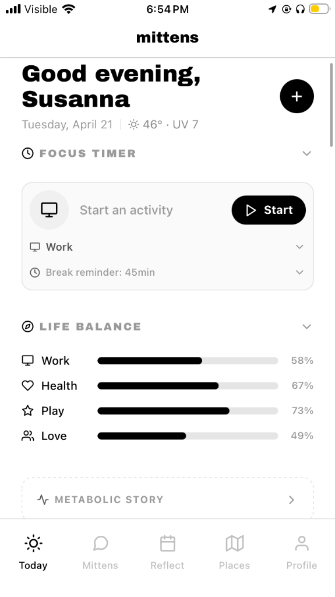

A warm little place for your whole life.
A life-metabolism engine: meals, movement, sleep, and places flow through one brain-agnostic pipeline (Groq, Gemini, Claude, or fully local). The next surface is hardware — an ESP32-S3 pendant that observes ambiently so you log less.
Firmware for a Seeed XIAO ESP32-S3 Sense: wake-on-motion deep sleep via MPU-6050 interrupt, VGA camera capture, 5-second PDM audio into PSRAM, BLE provisioning, multipart upload over WiFi — split into modules, each subsystem first verified on hardware in its own test sketch.
